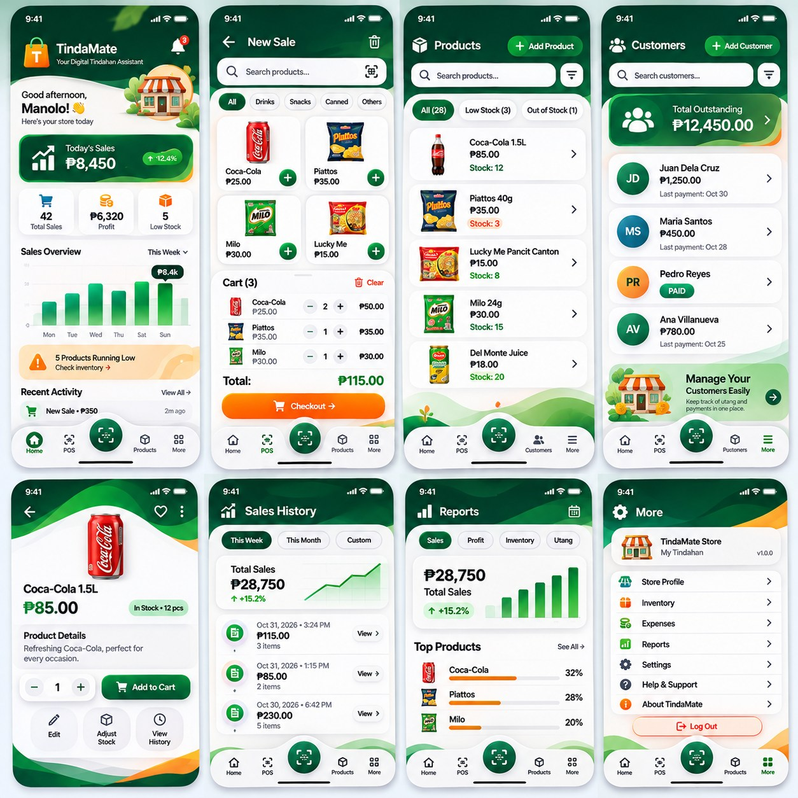
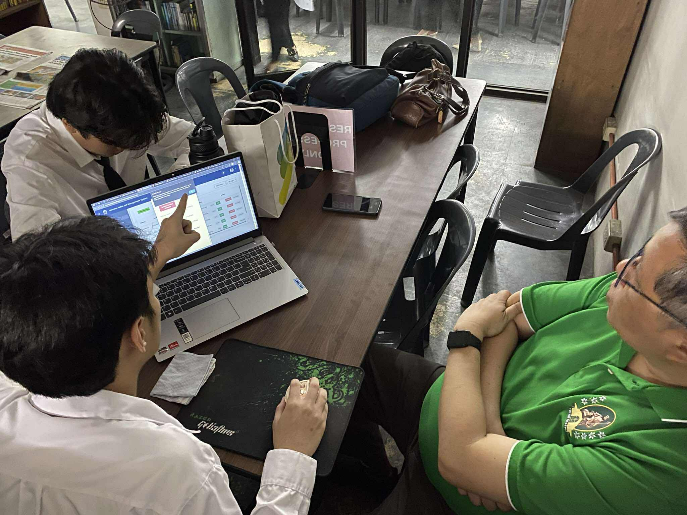
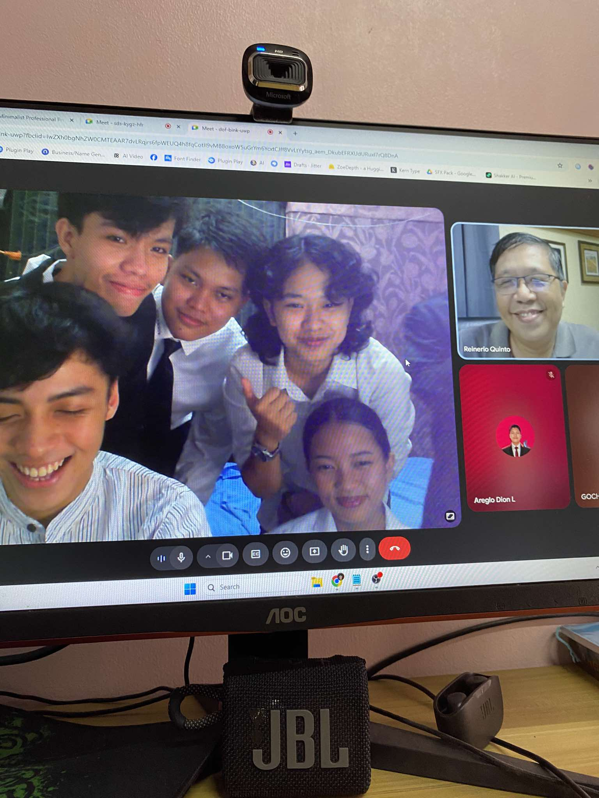

TindaMate — Mobile POS & Ledger
Specialized retail POS and inventory app with multi-item cart, customer credit ("utang") ledger, and automated COGS profit analytics.
I am a 3rd-year college student and aspiring Full-Stack Web Developer with a strong commitment to building performant, modern, and user-focused digital experiences. I enjoy turning complex problems into intuitive web and mobile solutions.
My technical focus centers on modern frontend architectures, clean state management, RESTful APIs, and relational databases. I believe in writing readable, maintainable code and continuously exploring new frameworks and architectural patterns.
When I'm not writing code, I actively study emerging software patterns, refine personal projects, and contribute to developer learning communities.
3rd Year College — Caloocan City
Building foundational and intermediate engineering skills through university coursework, team collaborations, and real-world system requirements. Exploring full-stack lifecycles from architecture diagrams to database integration.
Independent Practice
Developing practical, scalable applications to master modern frontend and backend technologies. Emphasizing clean folder structures, modular vanilla JavaScript, responsive CSS design systems, and database relationships.

Specialized retail POS and inventory app with multi-item cart, customer credit ("utang") ledger, and automated COGS profit analytics.

Enterprise record, plot management, and booking platform powered by PHP MVC REST API, MySQL database, and Python Flask AI forecasting.

Engineering analysis and architectural diagrams documenting component decoupling, API boundaries, and database trade-offs.
Academic & Online Training
2025
Computer Studies Department
2025
Technical Coursework
2025
Outside of programming, I focus on continuous personal development, studying emerging tech innovations, and collaborating with fellow student developers.
I believe that great software engineers combine technical execution with empathy, clear communication, and an eagerness to keep learning every day.